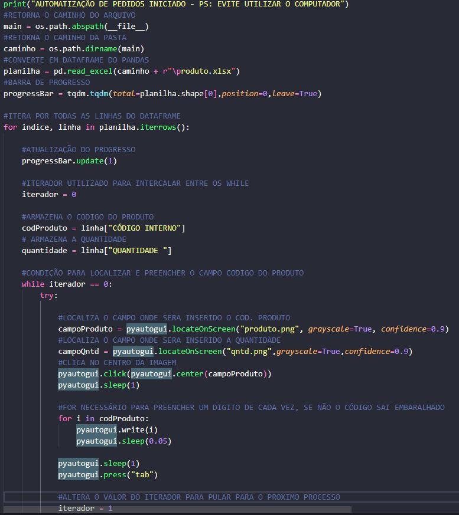
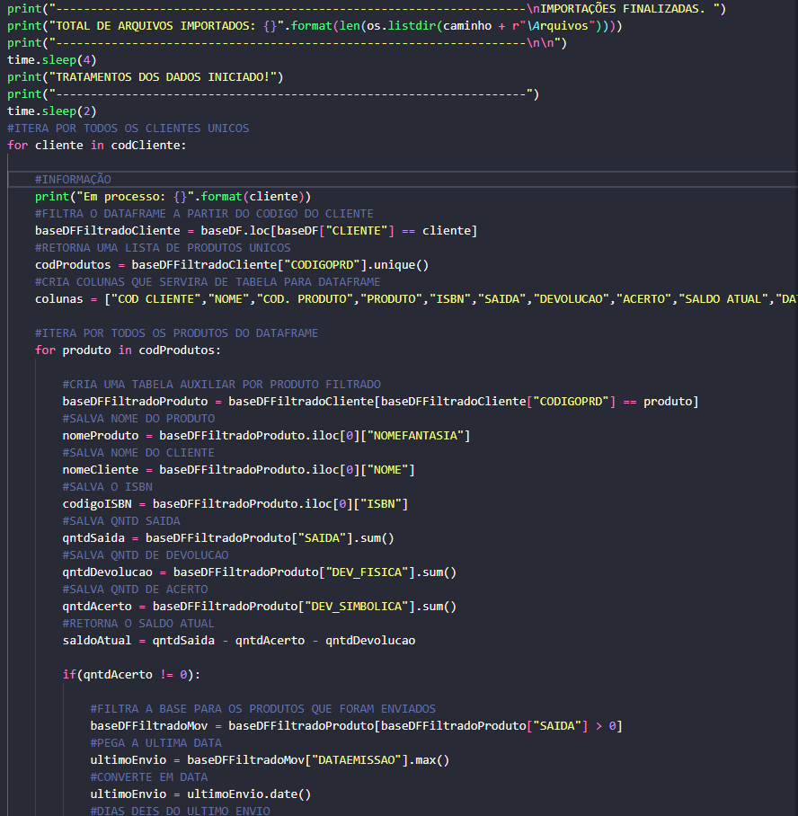
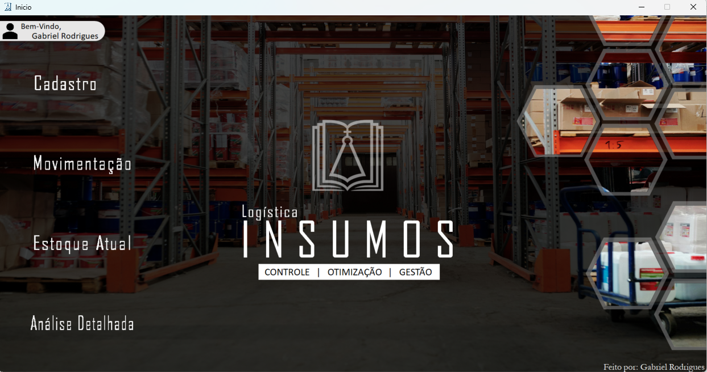

Meu Portfólio
Automatização de Pedidos com Python
Desenvolvi uma RPA (Robotic Process Automation) utilizando Python para automatizar o processo de geração de pedidos. A automatização preenche automaticamente os campos de código do produto e quantidade com base nas informações contidas em uma planilha. Utilizei as bibliotecas: Pandas, PyautoGui para acessar e manipular esses dados, resultando em um processo mais rápido e eficiente.
Abaixo, apresento um trecho do código
Tratamento de Dados com Python
Desenvolvi uma solução para o tratamento de dados em uma planilha com mais de 300 mil linhas. A automatização filtra e trata dados para cada cliente individualmente, determinando se os itens consignados devem ser retornados à empresa com base em vários critérios. O processo gera um arquivo Excel para cada cliente e organiza tudo em uma pasta, facilitando a gestão e análise dos dados.
"Uma curiosidade interessante sobre o tratamento de dados com Python é que, inicialmente, eu implementei toda a lógica no VBA, pois naquela época eu tinha pouco conhecimento e familiaridade com Python. No VBA, o processamento de dados para um conjunto de aproximadamente 150 mil linhas levava cerca de 40 minutos para ser concluído. Com o tempo, e à medida que me aprofundei no estudo de Python, reescrevi o código utilizando esta nova linguagem. A transição para o Python resultou em uma otimização significativa do processo. Atualmente, com um conjunto de dados de até 300 mil linhas, o tempo de processamento foi reduzido para apenas 10 a 20 segundos. Isso representa uma melhoria de aproximadamente vezes na eficiência do processamento"
Abaixo, apresento um trecho do código
Sistema de Controle de Estoque em VBA
Desenvolvi um sistema em VBA para controle de estoque de insumos em uma empresa. Este sistema inclui várias telas (userforms) que oferecem diferentes funcionalidades, como cadastro de produtos, movimentação de estoque, visualização do estoque atual e análises detalhadas. O sistema é altamente funcional, com códigos complexos e lógica avançada para tratamento de dados e erros.
Abaixo, apresento um trecho do código
